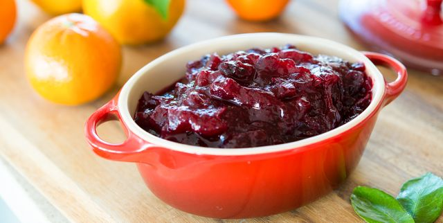

Cranberry Sauce

Description
A Thanksgiving classic. Originally submitted to ThanksgivingRecipe.com.
Ingredients
-
12 ounces cranberries
-
1 cup white sugar
-
1 cup orange juice
Steps
-
In a medium sized saucepan over medium heat, dissolve the sugar in the orange juice.
Stir in the cranberries and cook until the cranberries start to pop (about 10 minutes).
Remove from heat and place sauce in a bowl. Cranberry sauce will thicken as it cools.